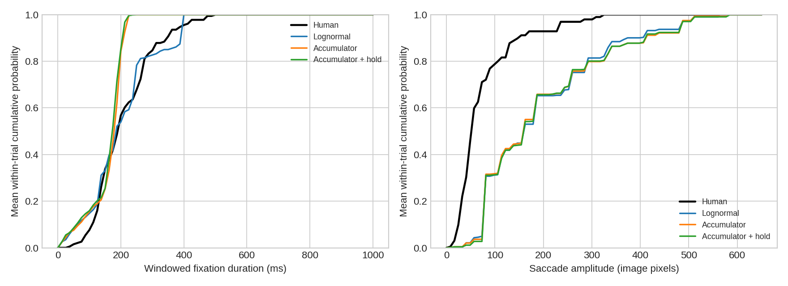

Phase 3 compares three timing models while preserving spatial weights, perception, memory updates, peripheral guidance and EIG. The existing softmax selects where; the race controls when the model is ready to leave.
Conditional test CRPS is 56.89 ms for lognormal, 62.75 ms for accumulator and 61.23 ms for accumulator + hold (lower is better). Thus the validation ranking does not carry over to this small test subset. Autonomous duration Wasserstein error is 87.18, 73.79 and 76.19 ms respectively, but paired improvement intervals include zero: accumulator −13.38 ms [−28.03, +0.62], hold −10.99 ms [−24.96, +1.79]. NSS stays near 0.09–0.10; amplitude mismatch remains large (about 141–145 pixels).
Recommendation: retain the existing default and the simple lognormal comparator. Keep the accumulator as an experimental timing option; the current data do not support paying the additional complexity cost of processing hold. Validation selected accumulator, but neither the joint temporal/spatial results nor the small sample establish a general improvement. No winner was re-fitted after test inspection.
COCO-Search18 target-present visual search: a locally available 24-scene subset of the released training material, split by image into 12 training, 6 validation and 6 internal test scenes. Test evaluation uses 60 trials, 10 participants and three common model seeds (540 autonomous runs). This is not the official benchmark test set. These test scenes were already examined during Phase 2; independent confirmation requires a new sample.
SSDLite320 MobileNetV3 supplies centrally gated semantic estimates; pinned MiDaS Small supplies centrally observed relative depth. The known initial gaze and human response-time exposure window are supplied; future human fixations are never supplied to autonomous runs. Stimuli were aspect-preserving padded to the recorded display ratio and resized to 640 × 400 with matching gaze-coordinate scaling. The original display pipeline may differ; official assets and calibrated viewing geometry are needed for confirmation. Human durations were truncated at recorded response time using cumulative fixation time; the source lacks saccade gaps. Raw records and stimuli are kept local.
CRPS in milliseconds (lower is better) scores the predictive duration distribution at a known current human gaze, conditioned on its observed past. It is distinct from autonomous scanpath prediction. Initial and terminal human fixations are excluded (263 training, 50 validation and 77 test conditional contexts). Parameters were fitted on training only, selected on validation, then frozen before test scoring. Six Monte Carlo draws per context make these approximate scores.
| Model | Train CRPS ↓ | Validation CRPS ↓ | Test CRPS ↓ |
|---|---|---|---|
| Lognormal | 51.383 | 63.002 | 56.886 |
| Accumulator | 56.881 | 56.348 | 62.752 |
| Accumulator + hold | 55.369 | 53.327 | 61.233 |
Seeds are averaged within image/participant, participants within image, then images equally. Wasserstein distance measures distribution mismatch; NSS is higher-better, spatial DTW lower-better. Amplitudes are image pixels because this subset lacks calibrated viewing geometry. Counts and durations exclude the supplied initial fixation; stays are merged.
| Model | Duration W1 ms ↓ | Amplitude W1 px ↓ | NSS ↑ | Spatial DTW ↓ | Revisit rate | Fixation count | Mean dwell ms | Censored fraction |
|---|---|---|---|---|---|---|---|---|
| Lognormal | 87.179 | 141.392 | 0.092 | 0.181 | 0.004 | 2.661 | 200.719 | 0.383 |
| Accumulator | 73.794 | 143.582 | 0.093 | 0.180 | 0.009 | 2.894 | 159.705 | 0.316 |
| Accumulator + hold | 76.187 | 144.851 | 0.100 | 0.183 | 0.009 | 2.956 | 155.335 | 0.311 |

The CDF averages each trial equally. Displayed tails extend beyond the plot limits. Duration distributions include window-truncated terminal fixations; they describe observed viewing windows, not uncensored physiological lifetimes. Conditional timing fitting excludes terminal intervals. Complete-only model means and image/participant aggregates are available in the CSVs.
2,000 crossed image/participant bootstrap resamples after averaging seeds. Intervals are approximate and pointwise, with only six scenes; they are not corrected significance tests. Lower is better for Wasserstein/DTW, higher for NSS. A revisit-rate change has no intrinsically favorable sign.
| Model | Metric | Delta | 95% interval |
|---|---|---|---|
| Accumulator | duration_wasserstein_ms | -13.385 | -28.031 to 0.624 |
| Accumulator | amplitude_wasserstein_px | 2.191 | -12.860 to 17.621 |
| Accumulator | nss | 0.001 | -0.069 to 0.089 |
| Accumulator | spatial_dtw | -0.001 | -0.009 to 0.008 |
| Accumulator | model_refixation_rate | 0.006 | 0.000 to 0.022 |
| Accumulator + hold | duration_wasserstein_ms | -10.992 | -24.960 to 1.789 |
| Accumulator + hold | amplitude_wasserstein_px | 3.459 | -10.989 to 17.105 |
| Accumulator + hold | nss | 0.008 | -0.053 to 0.103 |
| Accumulator + hold | spatial_dtw | 0.002 | -0.009 to 0.012 |
| Accumulator + hold | model_refixation_rate | 0.006 | 0.000 to 0.022 |
The stochastic models integrate independent noisy candidate readiness with diffusion proportional to √dt. Crossing triggers a separate motor preparation; execution is excluded from fixation duration. Hold independently reduces readiness drift according to remaining useful sensory acquisition. At zero strength it reproduces the no-hold model exactly under the same noise. The online processing signal saturates; the original world update still commits once per observation. A full online belief-update theory is deferred.
The shared existing stay option still permits processing-dependent revisits. The optional race destination selector was not used in this comparison. Motor decomposition, sensory ceiling and the pixel-based execution formula are assumptions that fixation-only recordings cannot independently identify. No head motion, blink or robot controller was added.
Training fit favors lognormal, validation favors hold, and the validation simplicity rule selects the intermediate accumulator. Test results must be read jointly with spatial statistics; better timing alone does not establish realistic visual search. Keep all three variants available and seek new scenes and broader timing calibration before replacing the default.
COCO-Search18 dataset information · Machine-readable results · Frozen fit and grid · Summary CSV · Image aggregates · Participant aggregates